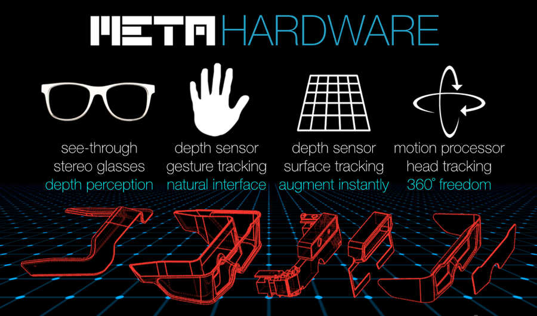
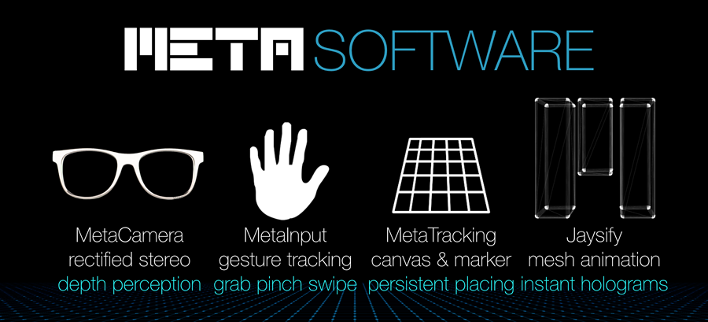

Meta Features

The Meta 1 glasses provide the developer hardware necessary to experience and develop see-through, immersive AR.
| Hardware Features | Benefits |
| Stereoscopic vision | Left and right eyes see offset images to create true depth and focus |
| 960 x 540 resolution | 480 x 540 resolution per eye provides sharp detail and readable text |
| 23 degree field of view | 12 times the display area of Google Glass |
| 35 degree field of view enhancer | Interchangeable optics expand your field of view for bigger UIs |
| SoftKinetic DepthSense time-of-flight | 320 x 240 depth map for close interaction with gestures from 10cm out to 2 meters |
| USB connection | Works with any computer via USB port |
| HDMI display cable to computer | Works with any computer via HDMI port or other display output using adapters |
| 3D/2D toggle | Use the full 960 x 540 display as an external monitor for your computer |

The Meta SDK provides frameworks for tracking, input, user interfaces and App distribution that you can use to create your own Meta applications.
| Software Features | Benefits |
| DEVELOPMENT ENVIRONMENT | |
| Windows-based Unity development | Develop on a Windows PC, such as a laptop or wearable tablet |
| Meta Unity Editor Features | Meta enhances the Unity editor to make the development workflow efficient |
| Standalone executable releases | Build distributable App executables that users can load and interact with |
| | |
| GRAPHICS | |
| TrueScale Rectification | Objects appear to be 1:1 scale (see Field of View) |
| | |
| TRACKING | |
| Color sensor markers | AprilTag robust markers provide enhanced tracking of objects and environments |
| Depth sensor surface canvases | Track featureless surfaces, such as tables and walls within a range of 2 meters |
| | |
| INPUT | |
| 10 finger hand input | Track two 5-fingered hands |
| Gesture input | Interact with Apps using gestures including touch, grab and pinch |
| MGUI UI Framework | Consistent UI widgets for building App experiences |
| Meta OS | Multi-tasking environment for loading multiple Meta Apps |
| Virtual keyboard | Type using the floating, holographic keyboard |
| | |
| USER INTERFACE | |
| MGUI Panel-based interfaces | Build floating UI panels |
| MGUI Controls WYSIWYG editable | Arrange controls within panels using an easy-to-use drag and drop interface |
| Script-less UI events for prototyping | Non-coder UI designers can link buttons to methods, such as nav between panels |
| Jaysify instant holographic effects | Turn any mesh into a procedurally animated hologram, as designed by Jayse Hansen |
| | |
| BUNDLED SOFTWARE | |
| Unity 5 Pro - 6 Month Subscription | The world's top 3D engine, a $450 value |
| Vectrosity | Procedurally driven vector graphics |
| HighlightingSystem | Make anything glow and pulse smoothly |
| Coherent UI | HTML5 browsing and UI elements within Unity with live inspector and debug tools |
| SoftKinetic DepthSense SDK & IISU | Middleware for gesture recognition with SoftKinetic and other depth sensors |
Industries
Meta's see-through glasses, gestures and tracking can be used to transform many different industries.
| Industry | Uses |
| Computing | Access virtual desktops, open unlimited browser and media-viewing windows |
| Gaming | Multiplayer tabletop strategy and puzzle games, immersive holodeck "first-person" experiences, laser tag (see the Meta Game Development Guide) |
| Engineering | Hardware design, model sharing and client presentation |
| Sales | Interactive product customization |
| Medical | Medical training simulation, hands-free doctor assistance |
| Real Estate | House exploration, property management |
| Architecture | Design buildings and share them with clients |
| Interior Design | Arrange furniture in your space |
| Warehouse Management | See where packages are, track where they go |
| Training | Build guided training scenarios while you interact with real and virtual objects |
| Remote Assistance | Get experts to assist you as they observe what you are doing in real time |
| Law Enforcement | Training, records lookup, safety recording |

 1.8.8
1.8.8